打开修订专项地图 · T3 六类街区 / C1–C3 营地地块 / N-01 至 N-06 控制节点
33 张图：5 张全城专项图、10 桥状态图、8 张分区图、4 张 T1（含可选机场）、9 张 T2、5 张 C1、1 张通用地块库。覆盖全部 64 区格。点击缩略图打开可无限放大的 SVG；PNG 可直接保存。
本册基于工程《西雅图地图设计规范》。精确位置、房间包络与路线为新增设计提案，尚未通过白盒碰撞与通行验证。布局图与世界美术分离，不代表全城 3D 已实现。
设计说明 / 冲突修订 / 验证边界布局源数据 JSON结构校验报告
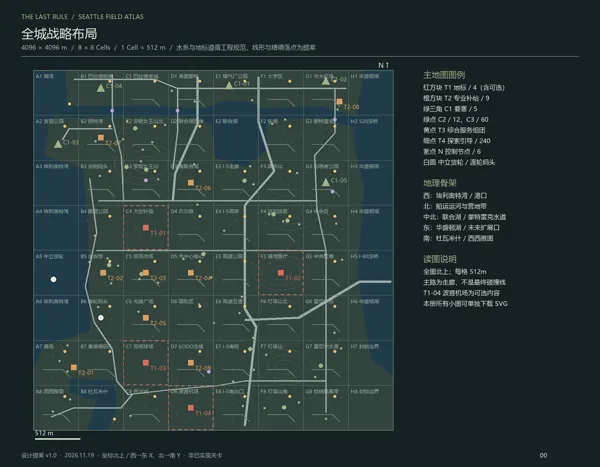
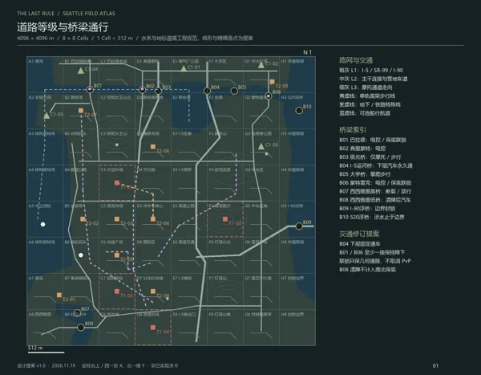
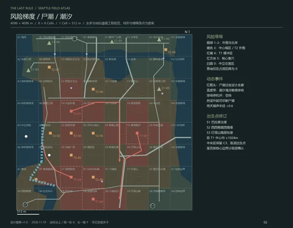
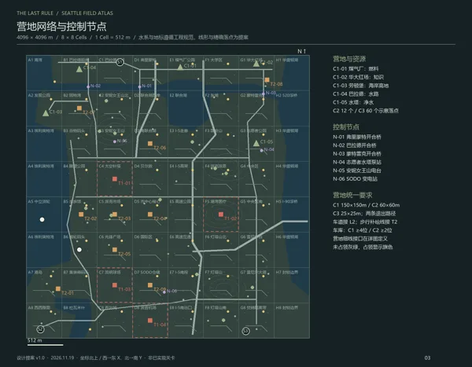
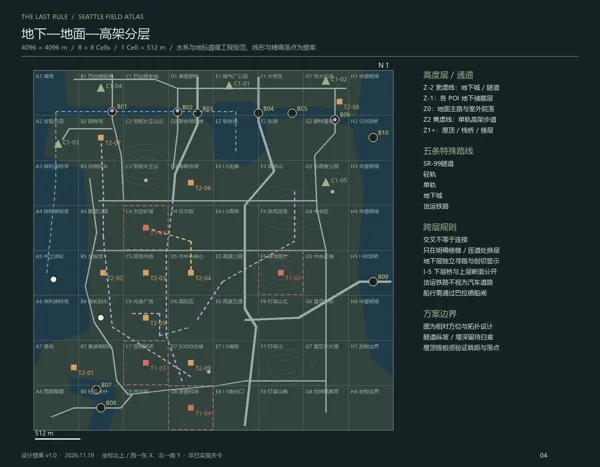
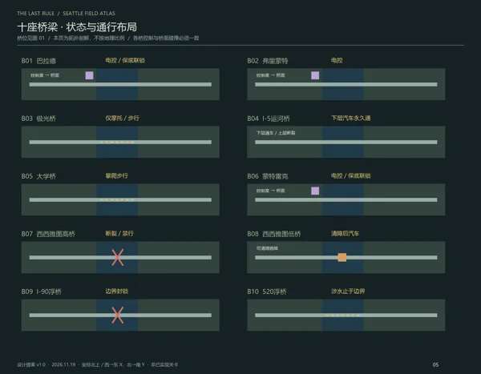
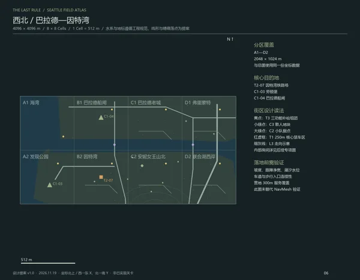
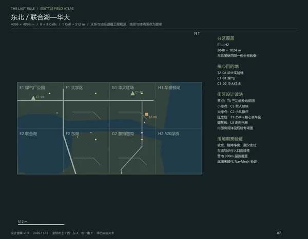
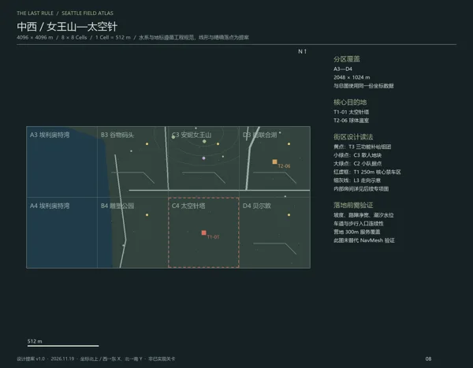
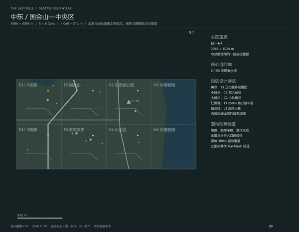
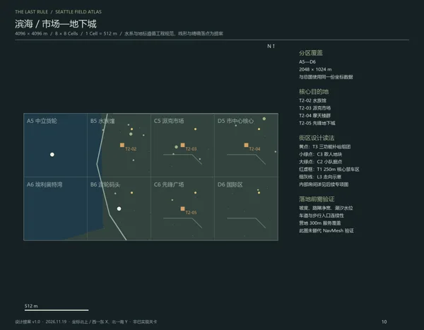
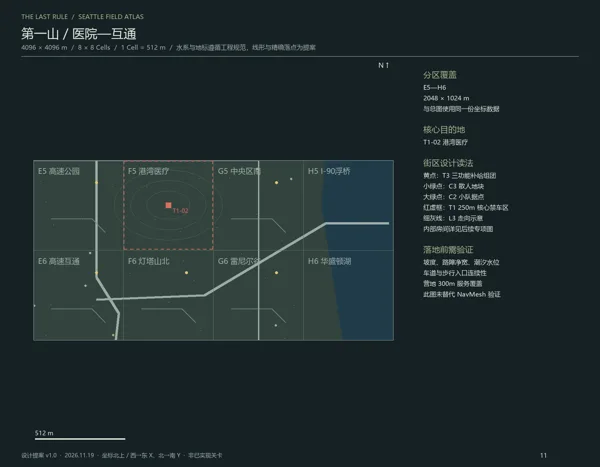
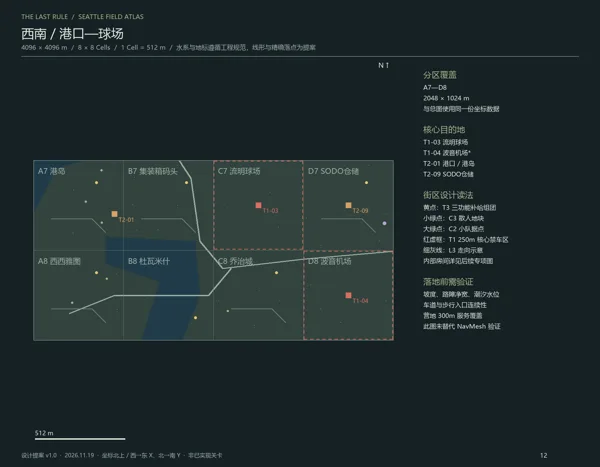
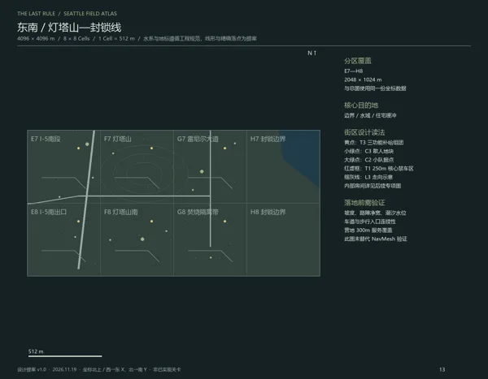
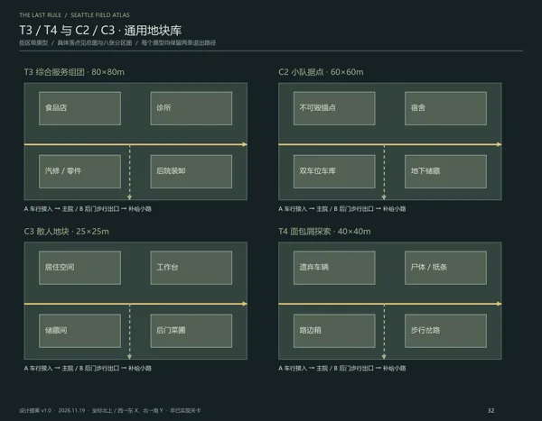
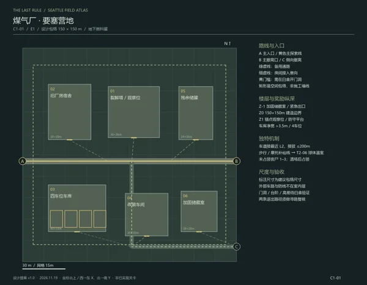
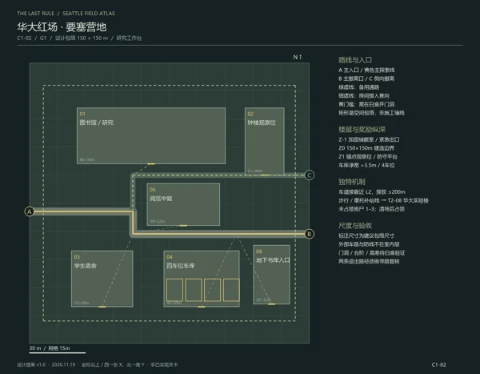
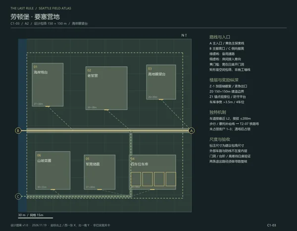
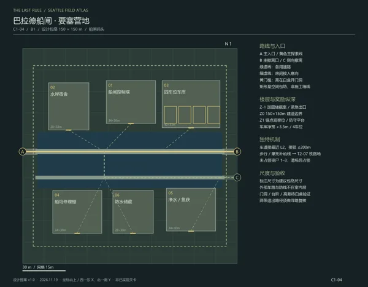
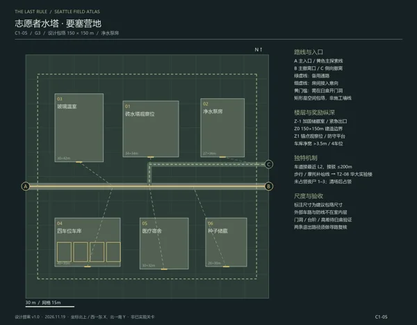
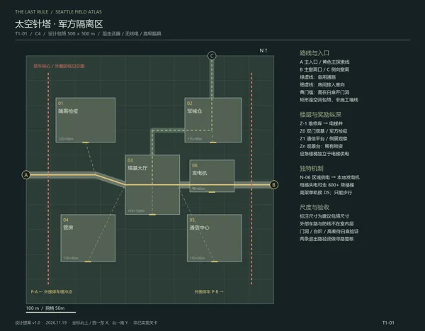
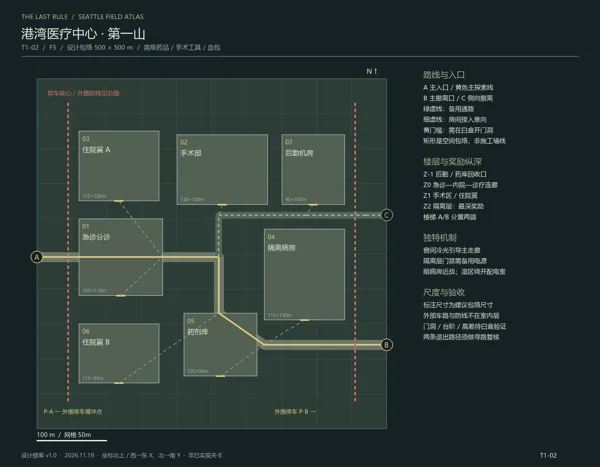
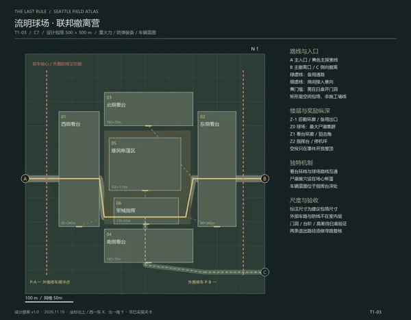
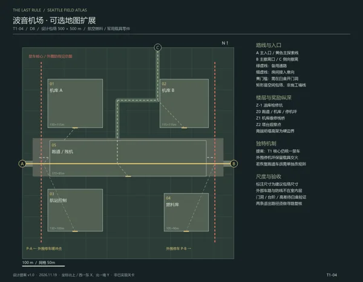
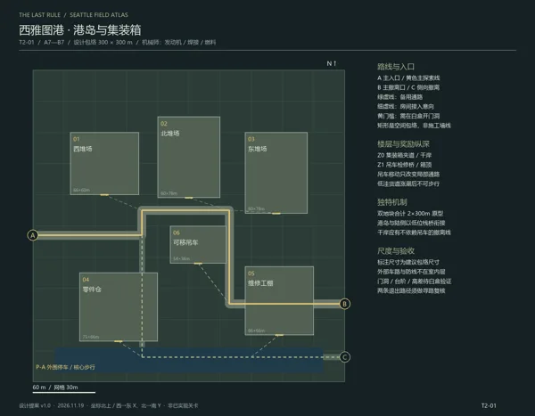
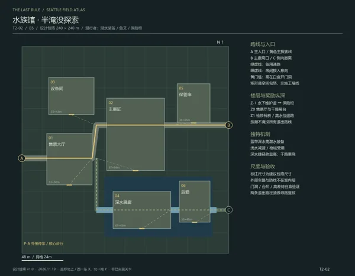
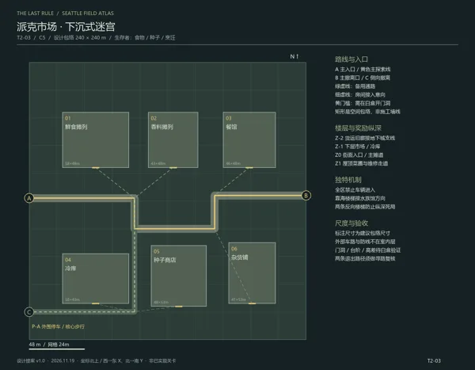
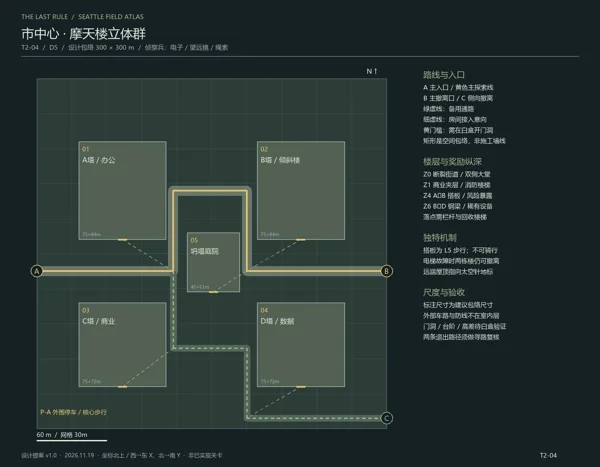
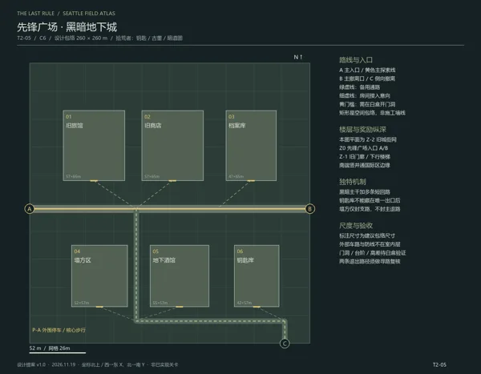
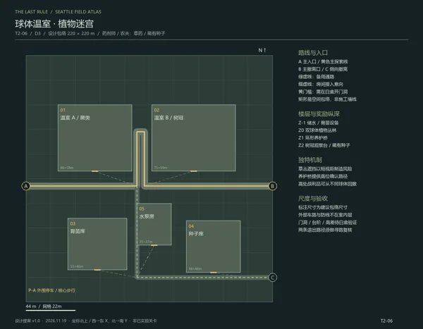
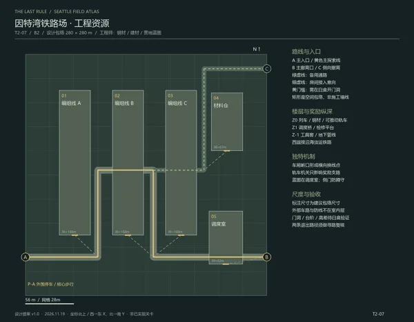
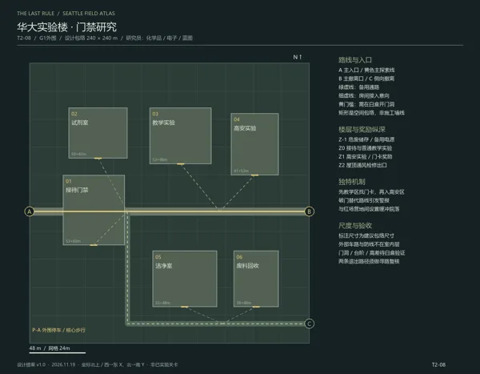
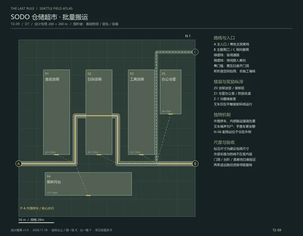